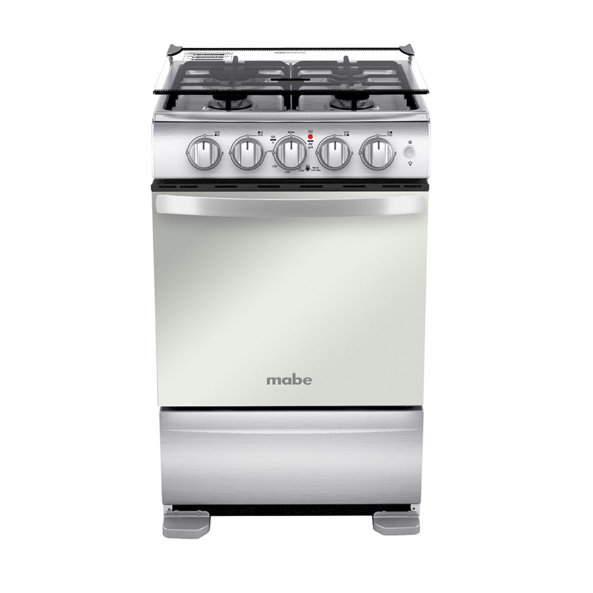
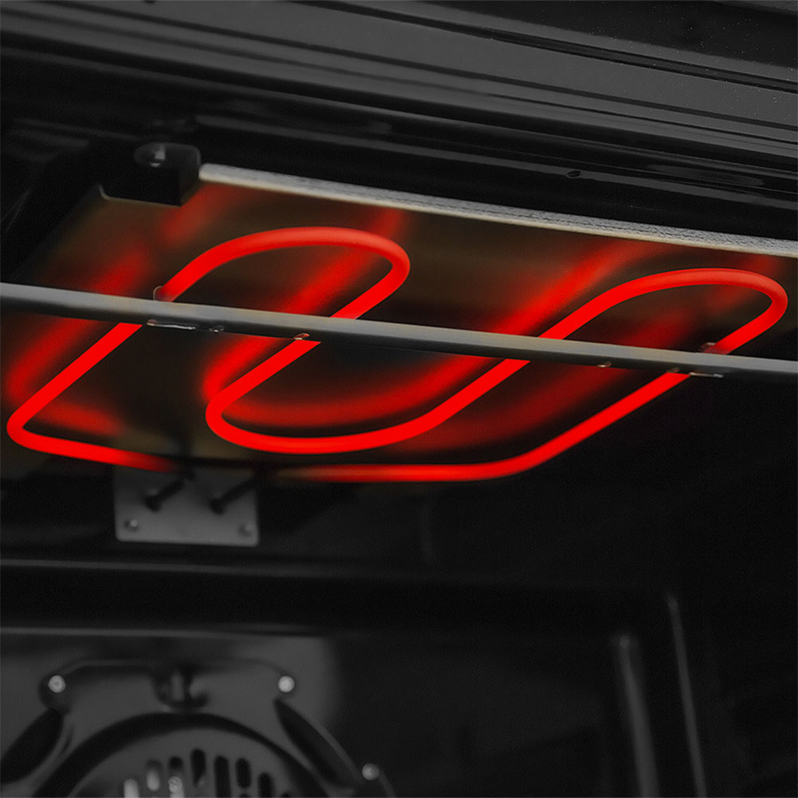
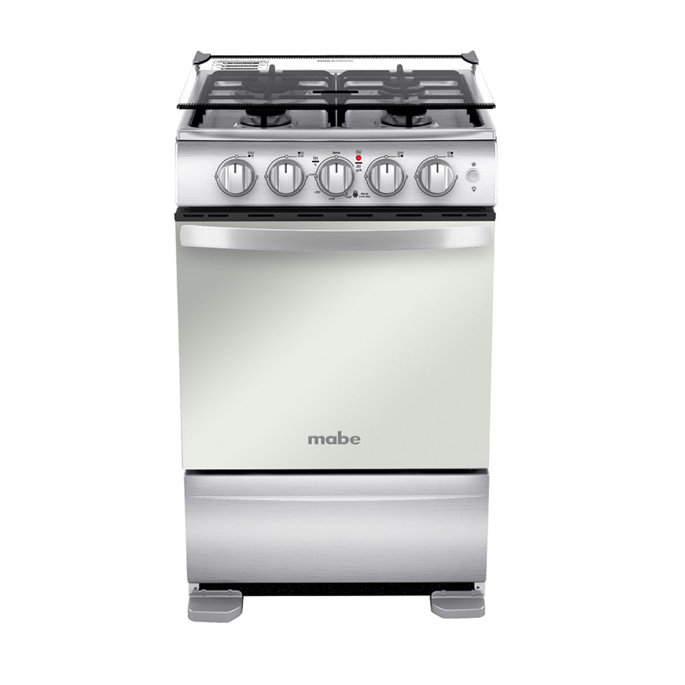
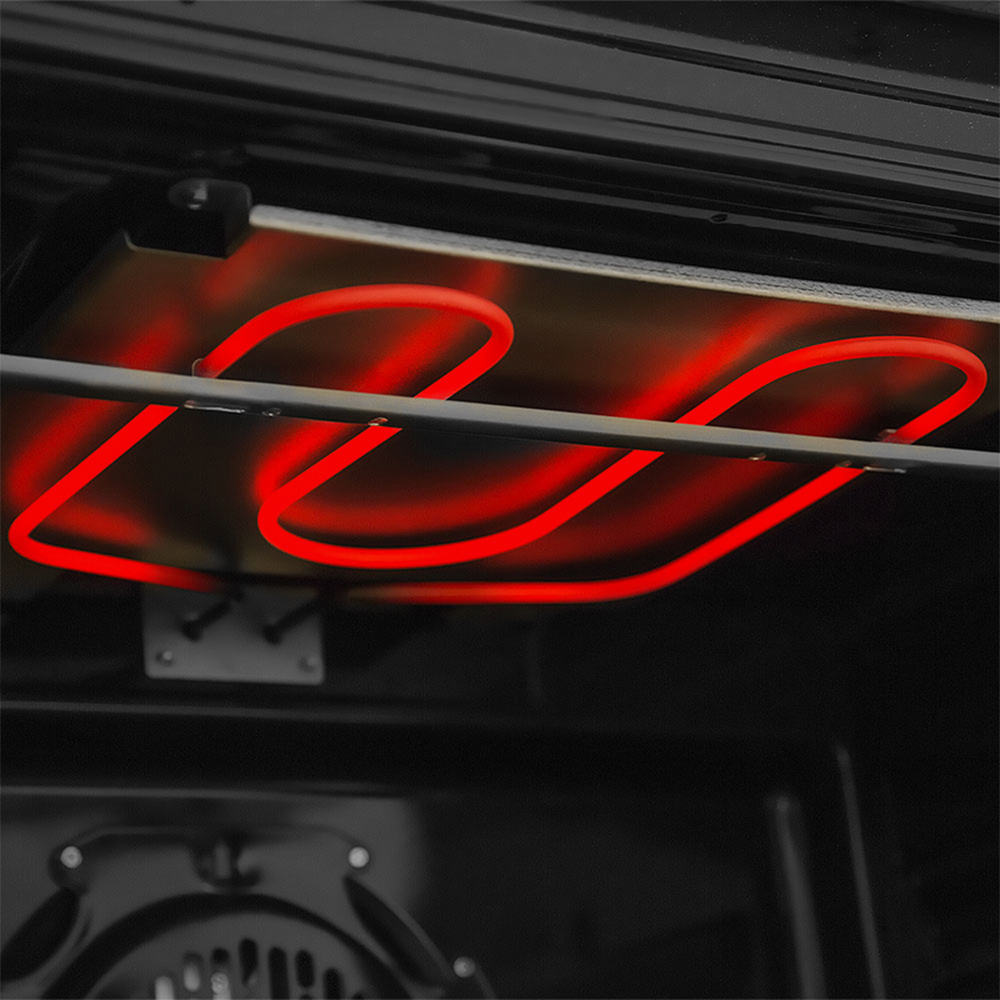

estufa mabe 50 centimetros TXIG-6CON
Con la estufa Mabe tienes una gran versatilidad, prepara grandes platos en su quemador jumbo, Diseño ideal para tu hogar. limpia tu horno tan facil como un vidrio, cubierta sellada de acero inoxidable.
 Con la estufa Mabe tienes una gran versatilidad, prepara grandes platos en su quemador jumbo, Diseño ideal para tu hogar. limpia tu horno tan facil como un vidrio, cubierta sellada de acero inoxidable.
 